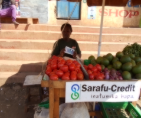

Happy Mother's Day!
As a way to celebrate we are happy to share two stories from our network members!

Bevelyne Ombayo is a single mother, who lives in Lindi Slums, Kibera.Running a business(selling fruits)and an active member of Lindi Business Network. She is celebrating more than one year being in the network and using Community Currency. She has been able to acquire more sales compared to her previous period before she joined the network. The network has enabled her trade with other members,being involved in activities such as Merry go rounds and table banking.The business caters for some of her daily needs, she doesn't miss a meal on the table and children as well go school. Through working as a team in the network has enabled grow her business through holding more sales from members that has attracted other customers who are not members of the network.She can acquire loans due to her personal savings in the chama.
Iglah Shimenga a mother of one is a member of Gatina Business Organization and runs a grocery business( tomatoes, onions, fruits and vegetables at ksh 10= ksh 5 + Sc 5) on Muthiora Road in Gatina Location. The price is favourable to the members of the the surrounding community that enables her get more frequent customers making more sales and expanded her business. She joined the network in 2017. Being amongst the most active members has enabled her do savings. She doesn't have to hussle for food since she can purchase food for her family from a vendor in the network as well as her child at 4 years old is getting education in a member school Bensofil Community School in the network that allows her to pay part of the tuition using Community Currency.Currently her business is fairing well more than average," I really have more customers to date" she said.